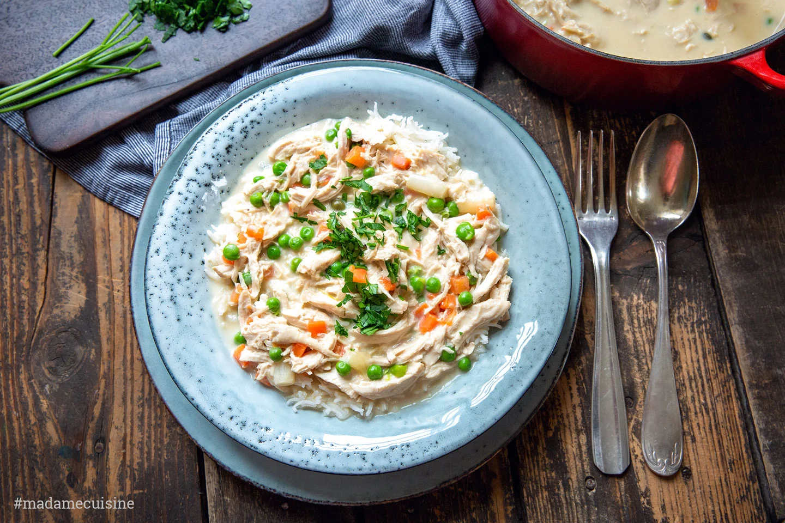

Hühnerfrikassee
20 Min
simpel
17.06.2025
Zutaten für:
| 0.25 | Stück Brathähnchen |
| 0.5 | TL Salz |
| Spritzer | Zitronensaft |
| 0.25 | Stück Zwiebel(n) |
| 0.5 | Stück Tomate(n) |
| 0.5 | Eigelb |
| 0.125 | Stück Sahne |
| 0.25 | Dose(n) Erbsen und Möhren |
| etwas | Mehl |
Zubereitung
Zeit 30 min
Gesamtzeit 50 min
- Das Brathähnchen in Stücke teilen und in einem Topf anbraten.
- Zwiebel und Tomate würfeln und hinzufügen.
- Mit Salz und Zitronensaft würzen.
- Sahne und Erbsen-Möhren-Mischung unterrühren.
- Mit Mehl binden und servieren.